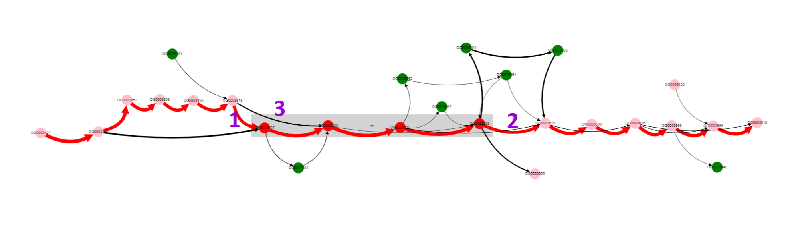

Use cases¶
Determine gene context of operon of interest¶
Consider we are interested in a particular operon and want to know something about its representation in a particular group of organisms. Let’s take lactose operon of Escherichia coli as example.
First we need to determine its genome position, i.e. in EcoCyc database. Positions of start and end genes of the operon are 361249-366305 in K-12 substr. MG1655 genome. First we select Escherichia coli as Organism (dataset containing 300 genomes) and K-12 as Reference. Only one contig is present (finished genome, no plasmids), so we do not need to change Contig value.

Then we should put operon margins to text fields: Start coordinate and End coordinate.

Now we click Draw button on the bottom panel and graph representation of the operon appears.

More clear layout can be obtained manually by left clicking and dragging nodes with mouse.
Gray rectangle is drawn around nodes between Start coordinate and End coordinate (lac operon genes in our case), other nodes are added to show context.
We can see that this operon is located in a conservative context mainly (thick edges designated with 1 and 2). Edge designated with 3 tells us that one of the operon’s genes is absent in some set of genomes. Lets left click on the edge 3 and on the node below. We will see that some edges changed their colors and a popup text with a gene name appeared.